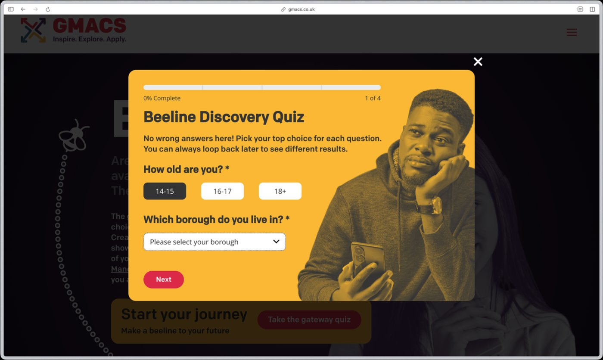
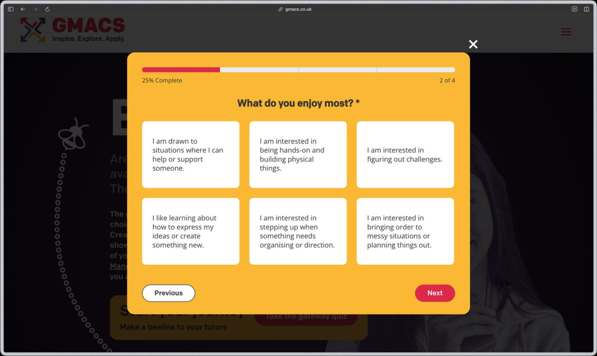
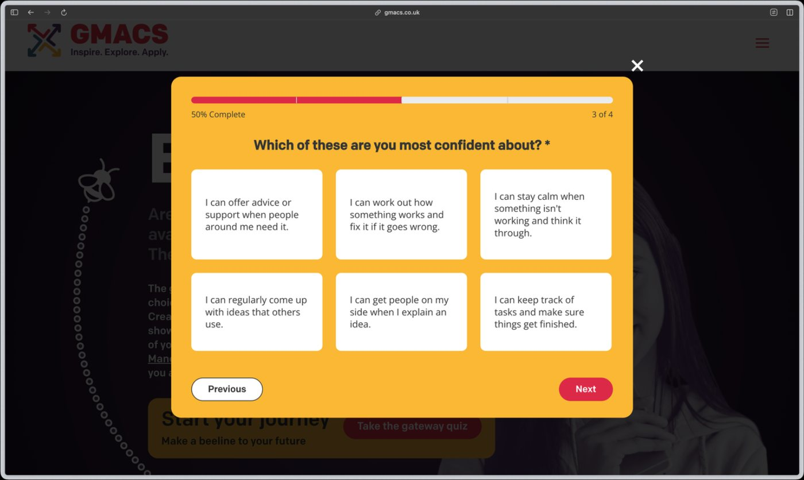
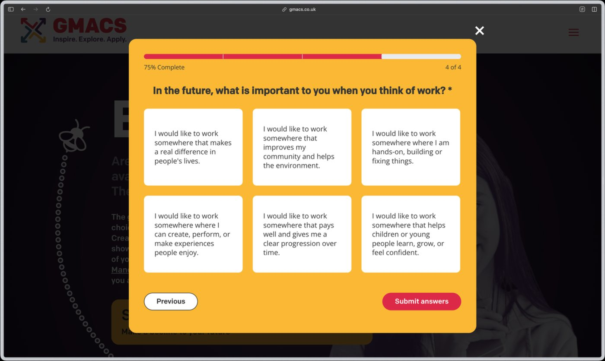
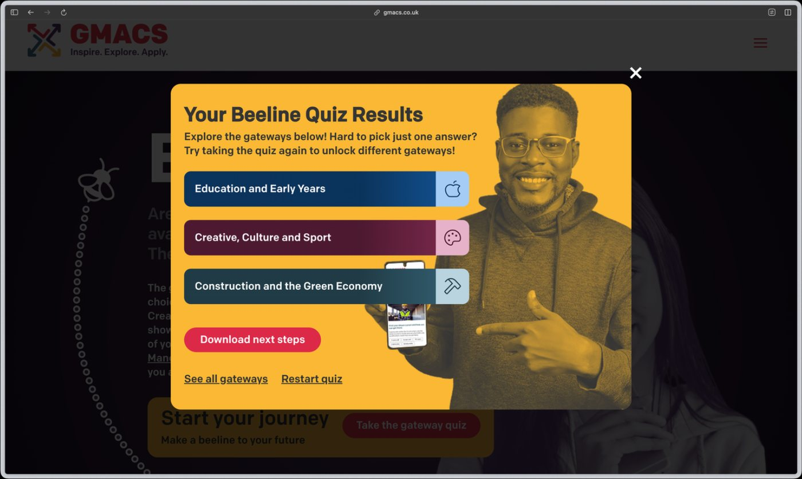
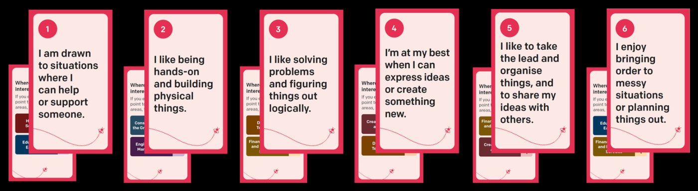
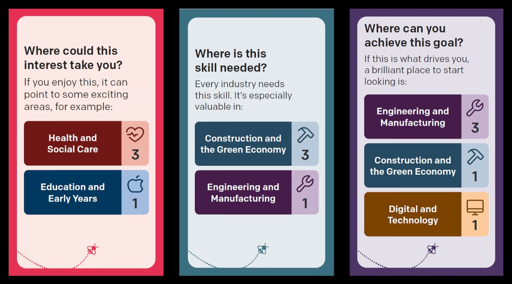
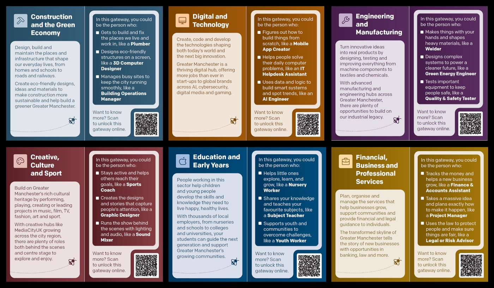

NOTE 01 · THE SYSTEMS UNDER A PUBLIC SERVICE
Beeline
Beeline?BEELINEThe Greater Manchester service that helps young people up to 25 explore careers and find a next step. is the young person’s version of the MBacc?MBACCThe Greater Manchester Baccalaureate, a framework that shows young people technical and academic routes into work., Greater Manchester’s framework of technical and academic routes into work. It runs across the region’s ten local authorities and serves people up to 25 years old.
IN THE PRESSSchools to offer technical subjects to pupils from age 14 in England, Burnham saysBBC News, 27 July 2026
The Discovery Quiz and the Discovery Game
A young person aged 14 to 18 answers four questions about what they enjoy, what they feel confident about and what matters to them in work, and sees three gateways to explore, with the jobs inside each. The same questions run offline as a card game for groups, and every gateway card opens the gateway online.








What young people changed
Every session with young people, families and practitioners goes into a design assurance log, and each item is acted on, planned in, or held with a reason. These came from young people and the adults working with them.
- “Showing a 0 signals ‘not for you’ and narrows options before a young person has explored them.”DONEEvery 0 was removed from the game, and scores are no longer shown on the quiz.
- “Gateway panels use corporate words like procurement and infrastructure.”DONEAll seven panels were redrafted in plain English after a reading-age review.
- “Young people feel restricted and want to pick more than one card per section.”DONEThe facilitation guide now allows more than one card, with guidance for short drop-in sessions.
- “Presenting gateways as fixed routes could make young people feel boxed in.”DONEThe results page was rewritten to encourage looking across all seven gateways.
- Young people asked for the running tally to stay hidden until the end.NEXTThe tally is concealed until the end in the next version of the game.
- Gateway names do not say what sits inside them.NEXTEach gateway carries a plain list of the jobs it holds, on the cards and on the page.
‘In my 10 years of doing this, I haven’t seen a resource like it.’A SENIOR TEAM LEADER AT A SALFORD YOUTH CHARITY
‘Online quiz is easy and short. The downloadable guide is good.’A YOUNG PERSON, CIVIC LEADERSHIP PROGRAMME SESSION
One plan, on every page
A young person says where they are once, in the header, and can save anything to their plan from any card or page. The plan is grouped by stage and kept on their device, and an account stays optional.
![A hand-drawn wireframe of the site header. On the left, a card for a data apprenticeship has a My plan button that opens a menu asking which stage to add it to: Discover, Explore, Connect, Practise, Decide or Keep going, or place it later. In the centre, an I am… selector lists eight starting points, with choosing my next step selected. On the right, the My plan tray shows five saved items grouped under Explore, Connect and Decide, a Not placed yet drop zone, Open my plan and Share with an adult buttons, and a Keeping your plan panel: saved on this device with no account, or make an account to keep it on any device.](assets/img/bl-site-shell.png)
The whole learner experience, redesigned
Built on experience and journey mapping. One “I am…” selector, set by readiness and intent, anchors each journey, and every route ends in the Planner Board, where a young person’s plan lives. The Planner Board is a personal planning board: a young person lays out the steps from their current subjects to the job they want, and shares it with the adult helping them decide.
Requests from stakeholders and partners go through a design assurance log I set up. It triages each one into the backlog, the roadmap or the user research log, and surfaces contradictions and gaps before they reach the build.
- START“I am…” selectorReadiness and intent
- STOP 1Discovery GameOffline, in class
- STOP 2Discovery Quiz and resultsGateways?GATEWAYSThe seven broad sectors in the MBacc, like Digital or Financial, that young people explore careers through. chosen
- STOP 3Gateway pages and Employer HubReal jobs and routes
- STOP 4Next Steps GuideWhat to do next
- SAVE POINTPlanner BoardSuggested cards and nudges, a shared view for an adult
Understanding careers education in England and in Greater Manchester, and building a place-based service for it
Six artefacts that carry the work: how careers education actually behaves across a region, and what a young person needs from something built inside it.
PROBLEM MODEL · ONE SENTENCE, FOUR LAYERS
read left to rightFive Learning Moments, one next-step rate
Engagement, Comprehension, Decision Quality, Confidence and Follow Through roll up into a Meaningful Next Step Rate?MEANINGFUL NEXT STEP RATEThe share of young people who go on to a real next step, rather than just using the service.. Each metric climbs one rung at a time, and only when the evidence allows it.
SCORE SCREEN · TWO METRICS, IN ACTION
Sessions comparing two or more gateways, before and after the order of the gateway cards was randomised (z = −6.75, p < 0.001). Part of last year’s figure was people clicking the next card down, so randomising the order removed position bias, and 17.2% is the cleaner measure.
Job searches opened per person, by where they came from. The quiz does the job it was built for, so we adapted the user journey to include it.
What I would do differently
I would settle each metric’s definition and tracking before a feature ships. Part of last year’s gateway comparisons came from people clicking down a fixed list, and the follow-through measure was redefined in August 2026, so nothing earlier can be compared. Now each claim is tagged with the rung of evidence it reaches, and the definitions stay fixed so Greater Manchester can build a year-on-year read of what young people move towards.
Where I work across the lifecycle
- 01 · DISCOVER ✓
- Landscape map of GM careers education
- Problem model
- 02 · PROTOTYPE ✓
- Unplugged offline toolkit
- Discovery quiz and game
- 03 · PILOT ✓
- Testing in schools, colleges and youth settings
- Launch & Learn?LAUNCH & LEARNThe pilot where Beeline was tested with schools, local authorities and youth organisations across all ten boroughs. across ten boroughs
- 04 · VALIDATE ✓
- Design assurance?DESIGN ASSURANCECollecting feedback from partners and young people in one log, so each point leads to a fix, a research question or a decision. rounds with young people
- Show & Tells
- 05 · BUILD · IN PROGRESSBEYOND THE BRIEF
- Roadmap and feature map
- Developer and supplier handoff
- 06 · MEASURE · IN PROGRESSBEYOND THE BRIEF
- Learning Moments?LEARNING MOMENTSFive stages of progress that Beeline measures, from first exploring careers to taking a real next step. and next-step rate
- A metrics framework that checks itself
Four stages cleared. Build and measure are in progress, from the roadmap to the metrics the board reads.